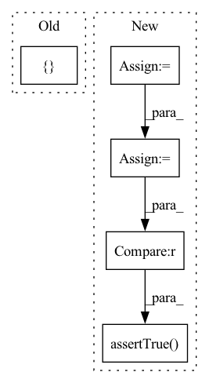

Pattern ID :20841
Before Change
numeric_features = ["age", "fare"]
numeric_transformer = Pipeline(steps=[("imputer", SimpleImputer(strategy="median")), ("scaler", StandardScaler())])
categorical_features = [ "embarked", "sex", "pclass"After Change
clf = Pipeline(steps=[("preprocessor", preprocessor), ("classifier", LogisticRegression(solver="liblinear"))])
to_drop = {"parch", "sibsp", "cabin", "ticket", "name", "body", "home.dest", "boat", "sex", "embarked"}
X_train = X_train.copy()
X_test = X_test.copy()
X_train["pclass"] = X_train["pclass"].astype(np.int64)
X_test["pclass"] = X_test["pclass"].astype(np.int64)
X_train = X_train.drop(to_drop, axis=1)
X_test = X_test.drop(to_drop, axis=1)
clf.fit(X_train, y_train)
torch_model = hummingbird.ml.convert(clf, "torch", X_test)
self.assertTrue(torch_model is not None )
np.testing.assert_allclose(
clf.predict(X_test), torch_model.predict(X_test), rtol=1e-06, atol=1e-06,
)In pattern: SUPERPATTERN
Frequency: 3
Non-data size: 5
Instances Fragment ID: 67218961
Project Name: microsoft/hummingbird
Commit Name: 26411642f06c123d1404658f7b7297f01836b330
Time: 2020-09-17
Author: m.interlandi@gmail.com
File Name: tests/test_sklearn_pipeline.py
M Class Name: TestSklearnPipeline
N Class Name: TestSklearnPipeline
M Method Name: test_pipeline_column_transformer_string(1)
N Method Name: test_pipeline_column_transformer_string(1)
M Parent Class: unittest.TestCase
N Parent Class: unittest.TestCase
M File Name: tests/test_sklearn_pipeline.py
N File Name: tests/test_sklearn_pipeline.py
M Start Line: 144
M End Line: 214
N Start Line: 143
N End Line: 179
Before Change
mod = PatchEmbed2D()
fake_input = torch.rand(1, in_c, img_height, img_width)
output = mod(fake_input)
gt_output_shape = torch.Size([ 1, 196, 768After Change
test_shape1 = (1, 3, 224, 224)
test_shape2 = (1, 3, 5, 224, 224)
fake_img = torch.rand(test_shape1)
fake_video = torch.rand(test_shape2)
model = PatchEmbed2D()
out1 = model(fake_img)
out2 = model(fake_video)
self.assertTrue(out1.shape == (1, 196, 768))
self.assertTrue(out2.shape == (5, 196, 768) )
Fragment ID: 67218947
Project Name: towhee-io/towhee
Commit Name: 143b84cdba34d140842077861db13b5483beed37
Time: 2022-04-20
Author: mengjia.gu@zilliz.com
File Name: tests/unittests/models/layers/test_patch_embed2d.py
M Class Name: PatchEmbed2DTest
N Class Name: PatchEmbed2DTest
M Method Name: test_patch_embed2d(1)
N Method Name: test_patch_embed2d(1)
M Parent Class: unittest.TestCase
N Parent Class: unittest.TestCase
M File Name: tests/unittests/models/layers/test_patch_embed2d.py
N File Name: tests/unittests/models/layers/test_patch_embed2d.py
M Start Line: 24
M End Line: 30
N Start Line: 24
N End Line: 32
Before Change
frequency = 0.01
monitoring_time = 10
nvml_monitor = NVMLMonitor(frequency)
nvml_monitor.start_recording_metrics([ "memory"After Change
// One measurement every 0.01 seconds
frequency = 0.01
monitoring_time = 10
tags = [GPUUsedMemory, GPUFreeMemory]
nvml_monitor = NVMLMonitor(frequency, tags)
nvml_monitor.start_recording_metrics()
time.sleep(monitoring_time)
records = nvml_monitor.stop_recording_metrics()
// Assert instance types
for record in records:
self.assertIsInstance(record.device(), GPUDevice)
// The number of records should be dividable by number of tags
self.assertTrue(len(records) % len(tags) == 0)
self.assertTrue(len(records) > 0 )
with self.assertRaises(TritonModelAnalyzerException):
nvml_monitor.stop_recording_metrics()
Fragment ID: 67218955
Project Name: triton-inference-server/model_analyzer
Commit Name: feee1bf0c30a94d427bd6333f7373f9fc3b45196
Time: 2020-11-24
Author: itabrizian@nvidia.com
File Name: tests/test_nvml_monitor.py
M Class Name: TestNVMLMonitor
N Class Name: TestNVMLMonitor
M Method Name: test_record_memory(1)
N Method Name: test_record_memory(1)
M Parent Class: unittest.TestCase
N Parent Class: unittest.TestCase
M File Name: tests/test_nvml_monitor.py
N File Name: tests/test_nvml_monitor.py
M Start Line: 45
M End Line: 66
N Start Line: 42
N End Line: 67